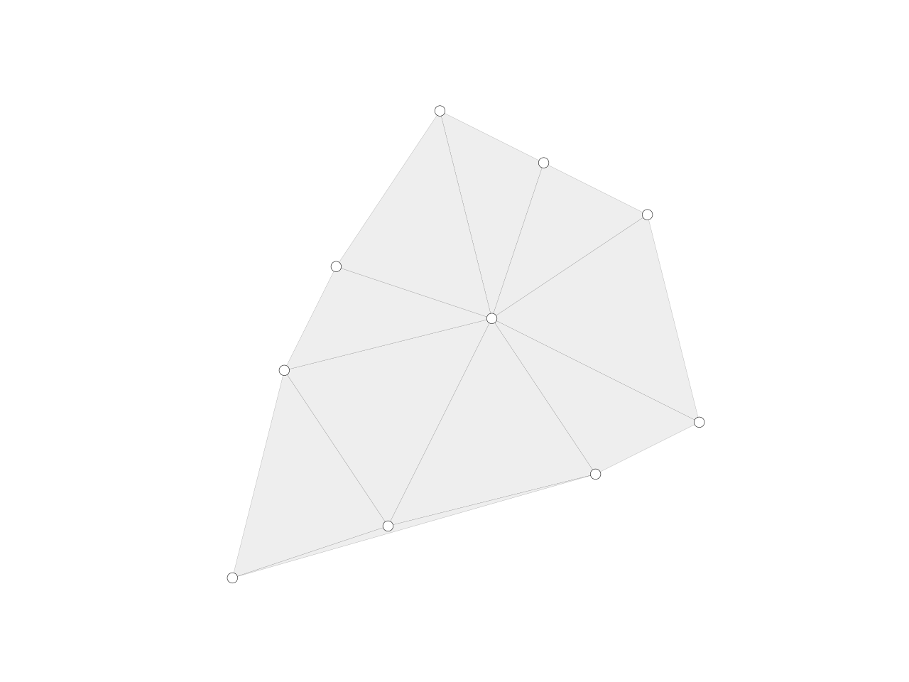

delaunay_from_points
-
compas.topology.delaunay_from_points(points, boundary=None, holes=None, tiny=1e-12)[source] Computes the delaunay triangulation for a list of points.
- Parameters
points (sequence of tuple) – XYZ coordinates of the original points.
boundary (sequence of tuples) – list of ordered points describing the outer boundary (optional)
holes (list of sequences of tuples) – list of polygons (ordered points describing internal holes (optional)
- Returns
list – The faces of the triangulation. Each face is a triplet of indices referring to the list of point coordinates.
Notes
For more info, see 1.
References
- 1
Sloan, S. W., 1987 A fast algorithm for constructing Delaunay triangulations in the plane Advances in Engineering Software 9(1): 34-55, 1978.
Example
from compas.geometry import pointcloud_xy from compas.datastructures import Mesh from compas.topology import delaunay_from_points from compas.plotters import MeshPlotter points = pointcloud_xy(10, (0, 10)) faces = delaunay_from_points(points) delaunay = Mesh.from_vertices_and_faces(points, faces) plotter = MeshPlotter(delaunay) plotter.draw_vertices(radius=0.1) plotter.draw_faces() plotter.show()
